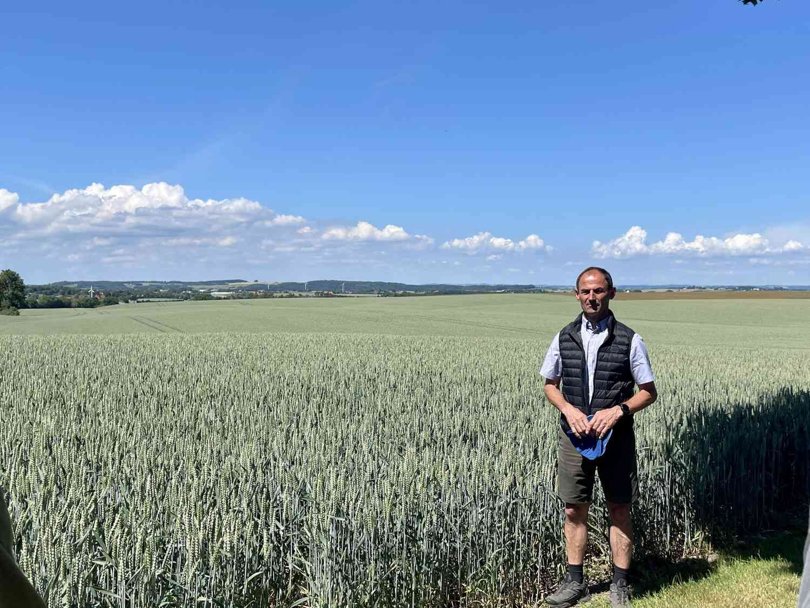

The Netherlands stands as a global exemplar in sustainable agriculture, renowned for its innovative and efficient farming practices. Despite being a densely populated country with limited land area, the Dutch have maximized their agricultural output through precision farming, advanced irrigation systems, and cutting-edge technology. The Dutch expertise in water management is particularly noteworthy, with extensive networks of canals, dikes, and drainage systems ensuring optimal use of water resources. Additionally, the Netherlands has embraced eco-friendly initiatives such as integrated pest management, organic farming, and crop rotation, fostering biodiversity and soil health. By emphasizing sustainable agriculture, the Netherlands not only meets its domestic food demands but also serves as a model for other nations striving to balance agricultural productivity with environmental stewardship.
Denmark is a trailblazer in sustainable agriculture, setting high standards for eco-friendly farming practices. With a strong emphasis on organic farming, crop diversification, and animal welfare, Denmark has become a European leader in environmentally conscious agriculture. Danish farmers employ techniques like crop rotation, integrated pest management, and efficient use of resources, ensuring minimal impact on the environment while maintaining high agricultural productivity. Government initiatives and support for organic farming have played a crucial role in Denmark's sustainable agriculture success story. By prioritizing sustainable practices, Denmark not only produces high-quality, organic food for its population but also showcases a model for sustainable agriculture that emphasizes both ecological responsibility and economic viability.
Iceland, despite its challenging climate and limited arable land, has made remarkable strides in sustainable agriculture. Through innovative techniques like geothermal heating, controlled environment agriculture (CEA), and hydroponics, Icelanders have managed to grow a variety of crops efficiently. Geothermal energy powers greenhouses, providing a controlled environment for year-round cultivation, even in the harsh Icelandic winters. This sustainable approach allows Iceland to produce fresh, local vegetables and fruits, reducing the need for importing food items and minimizing the carbon footprint associated with transportation. By harnessing their abundant geothermal resources and embracing cutting-edge agricultural methods, Iceland exemplifies how sustainable agriculture can thrive in the face of adverse environmental conditions, making it an inspiration for other nations striving for agricultural sustainability.
Costa Rica stands out as a shining example of sustainable agriculture practices in Central America. The country has placed a strong emphasis on eco-friendly farming methods, including agroforestry, organic cultivation, and biodiversity conservation. Costa Rican farmers utilize techniques such as intercropping and crop rotation to enhance soil fertility and reduce the reliance on harmful chemicals. The government actively promotes sustainable agriculture through policies that prioritize environmental conservation and support organic farming initiatives. By valuing both agricultural productivity and environmental preservation, Costa Rica has managed to foster a balanced and sustainable farming industry. This approach not only ensures a steady food supply for its population but also preserves the country's rich biodiversity and natural resources, making Costa Rica a model for sustainable agriculture in the region and beyond.
Australia has made significant strides in sustainable agriculture, implementing innovative practices to address the challenges posed by its vast landscapes and variable climate. Australian farmers have embraced precision agriculture, adopting technologies such as GPS-guided tractors and drones to optimize crop yields while conserving resources. Conservation tillage methods and water-efficient irrigation systems are widely employed to reduce soil erosion and conserve water, ensuring the long-term health of agricultural land. Additionally, Australia places a strong emphasis on research and development, fostering advancements in drought-resistant crops and sustainable livestock management techniques. The country's commitment to sustainable agriculture not only supports the agricultural sector but also contributes to environmental preservation and the resilience of rural communities, making it a pioneer in sustainable farming practices on a global scale.
India has made significant progress in sustainable agriculture, adapting traditional farming methods to modern challenges while emphasizing environmental stewardship and rural livelihood improvement. The country has implemented various eco-friendly practices such as organic farming, crop diversification, and integrated pest management to reduce reliance on chemical inputs. Additionally, India has promoted water conservation techniques like rainwater harvesting and drip irrigation to address water scarcity issues. The government has launched initiatives to support sustainable agriculture, including the National Mission for Sustainable Agriculture (NMSA), which focuses on soil health management and promoting organic farming practices. Furthermore, there is a growing emphasis on agroforestry, which helps improve soil fertility and enhances biodiversity. By integrating sustainable agricultural practices, India aims to ensure food security for its vast population while safeguarding natural resources and promoting the well-being of farmers.
France is renowned for its commitment to sustainable agriculture, blending tradition with innovation to cultivate its fertile lands responsibly. French farmers have embraced techniques such as agroecology, organic farming, and precision agriculture to reduce environmental impact while maintaining agricultural productivity. The country prioritizes biodiversity conservation, promoting practices like crop rotation, cover cropping, and natural pest control methods. Additionally, France has implemented initiatives to reduce pesticide usage and promote sustainable soil management. Farmers are encouraged to adopt eco-friendly practices through government subsidies and support programs. With a focus on preserving both the environment and cultural heritage, France serves as a beacon for sustainable agriculture in Europe, demonstrating how traditional farming wisdom combined with modern sustainable practices can create a harmonious balance between agricultural production and environmental preservation.